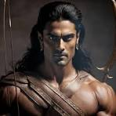

- Dharmaraju
Dharmaraju, also known as Yudhishthira, is one of the most prominent figures in the Hindu epic Mahabharata. He is the eldest of the five Pandava brothers and is renowned for his unwavering adherence to righteousness and dharma (virtue).
Here are some key aspects of Dharmaraju's character and his role in the Mahabharata:
Righteousness: Dharmaraju is a paragon of virtue, always striving to uphold the principles of dharma. He is known for his honesty, fairness, and compassion.
Wisdom: He possesses great wisdom and knowledge, often providing guidance and counsel to his brothers and others.
Leadership:
Here are some key aspects of Dharmaraju's character and his role in the Mahabharata:
Righteousness: Dharmaraju is a paragon of virtue, always striving to uphold the principles of dharma. He is known for his honesty, fairness, and compassion.
Wisdom: He possesses great wisdom and knowledge, often providing guidance and counsel to his brothers and others.
Leadership: Dharmaraju is the rightful heir to the throne of Hastinapura and is a natural leader. He is respected and admired by his subjects and peers.
Dharmaraju is the rightful heir to the throne of Hastinapura and is a natural leader. He is respected and admired by his subjects and peers.
Here are some key aspects of Dharmaraju's character and his role in the Mahabharata:
Righteousness: Dharmaraju is a paragon of virtue, always striving to uphold the principles of dharma. He is known for his honesty, fairness, and compassion.
Wisdom: He possesses great wisdom and knowledge, often providing guidance and counsel to his brothers and others.
Leadership: Dharmaraju is the rightful heir to the throne of Hastinapura and is a natural leader. He is respected and admired by his subjects and peers.
Trials and Tribulations: Despite his noble qualities, Dharmaraju faces numerous challenges and trials throughout the epic. He endures exile, loss, and betrayal, but his unwavering faith in dharma helps him overcome these obstacles.
Ultimate Victory: Dharmaraju ultimately emerges victorious in the Kurukshetra war, defeating his evil cousins, the Kauravas. He is crowned king of Hastinapura and establishes a just and righteous rule.
Dharmaraju is a beloved and revered figure in Hindu mythology, symbolizing the triumph of good over evil and the importance of adhering to righteous principles. His story continues to inspire and captivate audiences worldwide.
- Bheema
Beema, also known as Bhima, is one of the five Pandava brothers in the Hindu epic Mahabharata. He is renowned for his immense strength, courage, and loyalty to his family.
Here are some key aspects of Bhima's character:
Strength: Bhima is often described as having superhuman strength. He is capable of lifting mountains and defeating multiple opponents in combat.
Loyalty: He is fiercely loyal to his brothers and will do anything to protect them.
Anger: Bhima is known for his temper and can be easily provoked. However, he is also capable of great compassion and kindness.
Rivalries: He has a long-standing rivalry with his cousin Duryodhana, the eldest Kaurava brother.
Achievements: Bhima plays a crucial oyalty: He is fiercely loyal to his brothers and will do anything to protect them.
Anger: Bhima is known for his temper and can be easily provoked. However, he is also capable of great compassion and kindness.
Rivalries: He haser: Bhima is known for his temper and can be easily provoked. However, he is also capable of great compassion and kindness.
Rivalries: He has a long-standing rivalry with his cousin Duryodhana, the eldest Kaurava brother.
Achievements: Bhima plays a crucial oyalty: He is fiercely loyal to his brothers and will do anything to protect them.
Anger: Bhima is known for his temper and can be easily provoked. However, he is also capable of great compassion and kindness.
Rivalrieer: Bhima is known for his temper and can be easily provoked. However, he is also capable of great compassion and kindness.
Rivalries: He has a long-standing rivalry with his cousin Duryodhana, the eldest Kaurava brother.
Achievements: Bhima plays a crucial oyalty: He is fiercely loyal to his brothers and will do anything to protect them.
Anger: Bhima is known for his temper and can be easily provoked. However, he is also capable of great compassion and kindness.
Rivalrie a long-standing rivalry with his cousin Duryodhana, the eldest Kaurava brother.
Achievements: Bhima plays a crucial role in the Pandavas' victory over the Kauravas in the Kurukshetra war. He is credited with killing many of the Kaurava warriors, including Duryodhana himself.
Bhima's character is a fascinating blend of strength, loyalty, and anger. He is a beloved and respected figure in Hindu mythology and continues to inspire audiences with his heroic deeds.
- Arjuna
Arjuna is one of the five Pandava brothers in the Hindu epic Mahabharata. He is renowned for his skill as a warrior, his devotion to Lord Krishna, and his unwavering commitment to dharma (righteousness).
Here are some key aspects of Arjuna's character:
Warrior Skill: Arjuna is considered one of the greatest archers of all time. He is known for his accuracy, speed, and ability to hit multiple targets simultaneously.
Devotion to Krishna: Arjuna is a devout follower of Lord Krishna, who acts as his charioteer and advisor throughout the epic. Their relationship is central to the Mahabharata.
Dharma: Arjuna is deeply committed to upholding the principles of dharma. He is always striving to do the right thing, even when faced with difficult choices.
Doubt and Conflict: Despite Warrior Skill: Arjuna is considered one of the greatest archers of all time. He is known for his accuracy, speed, and ability to hit multiple targets simultaneously.
Devotion to Krishna: Arjuna is a devout follower of Lord Krishna, who acts as his charioteer and advisor throughout the epic. Their relationship is central to the Mahabharata.
Dharma: Arjuna isere are some key aspects of Arjuna's character:
Warrior Skill: Arjuna is considered one of the greatest archers of all time. He is known for his accuracy, speed, and ability to hit multiple targets simultaneously.
Devotion to Krishna: Arjuna is a devout follower of Lord Krishna, who acts as his charioteer and advisor throughout the epic. Their relationship is central to the Mahabharata.
Dharma: Arjuna is deeply committed to upholding the principles of dharma. He is always striving to do the right thing, even when faced with difficult choices.
Doubt and Conflict: Despite Warrior Skill: Arjuna is considered one of the greatest archers of all time. He is known for his accuracy, speed, and ability to hit multiple targets simultaneously.
Devotion to Krishna: Arjuna is a devout follower of Lord Krishna, who acts as his charioteer and advisor throughout the epic. Their relationship is central to the Mahabharata.
Dharma:ere are some key aspects of Arjuna's character:
Warrior Skill: Arjuna is considered one of the greatest archers of all time. He is known for his accuracy, speed, and ability to hit multiple targets simultaneously.
Devotion to Krishna: Arjuna is a devout follower of Lord Krishna, who acts as his charioteer and advisor throughout the epic. Their relationship is central to the Mahabharata.
Dharma: Arjuna is deeply committed to upholding the principles of dharma. He is always striving to do the right thing, even when faced with difficult choices.
Doubt and Conflict: Despite Warrior Skill: Arjuna is considered one of the greatest archers of all time. He is known for his accuracy, speed, and ability to hit multiple targets simultaneously.
Devotion to Krishna: Arjuna is a devout follower of Lord Krishna, who acts as his charioteer and advisor throughout the epic. Their relationship is central to the Mahabharata.
Dharma: deeply committed to upholding the principles of dharma. He is always striving to do the right thing, even when faced with difficult choices.
Doubt and Conflict: Despite his devotion to Krishna and his commitment to dharma, Arjuna experiences moments of doubt and conflict. He grapples with questions about the nature of justice and the morality of war.
Divine Guidance: Krishna provides Arjuna with divine guidance and wisdom, helping him overcome his doubts and fulfill his destiny.
Arjuna's character is a complex and multifaceted one. He is a symbol of both human frailty and divine grace. His story continues to inspire and captivate audiences worldwide.
- Nakula
Nakula is the fourth of the five Pandava brothers in the Hindu epic Mahabharata. He is known for his expertise in horse husbandry and his gentle nature.
Here are some key aspects of Nakula's character:
Horse Husbandry: Nakula is considered a master of horse rearing and training. He has a deep knowledge of horses and their care.
Gentle Nature: Unlike his brothers, who are known for their warrior skills and strong personalities, Nakula is more gentle and peaceful. He is often described as kind, compassionate, and easygoing.
Loyalty: Despite his peaceful nature, Nakula is fiercely loyal to his brothers and will do anything to protect them.
Contribution to the War: While notere are some key aspects of Nakula's character:
Horse Husbandry: Nakula is considered a master of horse rearing and training. He has a deep knowledge of horses and their care.
Gentle Nature: Unlike his brothers, who are known for their warrior skills and strong personalities, Nakula is more gentle and peaceful. He is often described as kind, compassionate, and easygoing.
Loyalty: Despite his peaceful nature, Nakula is fiercely loyal to his brothers and will do anything to protect them.
Contribution to the Warse Husbandry: Nakula is considered a master of horse rearing and training. He has a deep knowledge of horses and their care.
Gentle Nature: Unlike his brothers, who are known for their warrior skills and strong personalities, Nakula is more gentle and peaceful. He is often described as kind, compassionate, and easygoing.
Loyalty: Despite his peaceful nature, Nakula is fiercely loyal to his brothers and will do anything to protect them.
Contribution to the War: While notere are some key aspects of Nakula's character:
Horse Husbandry: Nakula is considered a master of horse rearing and training. He has a deep knowledge of horses and their care.
Gentle Nature: Unlike his brothers, who are known for their warrior skills and strong personalities, Nakula is more gentle and peaceful. He is often described as kind, compassionate, and easygoing.
Loyalty: Drse Husbandry: Nakula is considered a master of horse rearing and training. He has a deep knowledge of horses and their care.
Gentle Nature: Unlike his brothers, who are known for their warrior skills and strong personalities, Nakula is more gentle and peaceful. He is often described as kind, compassionate, and easygoing.
Loyalty: Despite his peaceful nature, Nakula is fiercely loyal to his brothers and will do anything to protect them.
Contribution to the War: While notere are some key aspects of Nakula's character:
Horse Husbandry: Nakula is considered a master of horse rearing and training. He has a deep knowledge of horses and their care.
Gentle Nature: Unlike his brothers, who are known for their warrior skills and strong personalities, Nakula is more gentle and peaceful. He is often described as kind, compassionate, and easygoing.
Loyalty: Dr: While as prominent in the battlefield as his brothers, Nakula still plays a role in the Pandavas' victory over the Kauravas in the Kurukshetra war.
Nakula may not be as well-known as his brothers, but he is a vital member of the Pandava family. His expertise in horse husbandry and his gentle nature contribute to the overall balance and harmony of the group.

- Sahadeva
Sahadeva is the youngest of the five Pandava brothers in the Hindu epic Mahabharata. He is known for his expertise in astrology and his ability to predict future events.
Here are some key aspects of Sahadeva's character:
Astrology: Sahadeva is considered a master of astrology. He has a deep knowledge of the stars and planets and can predict future events with great accuracy.
Wisdom: Sahadeva is known for his wisdom and intelligence. He is often consulted by his brothers for advice and guidance.
Loyalty: Like his brothers, re are some key aspects of Sahadeva's character:
Astrology: Sahadeva is considered a master of astrology. He has a deep knowledge of the stars and planets and can predict future events with great accuracy.
Wisdom: Sahadeva is known for his wisdom and intelligence. He is often consulted by his brothers for advice and guidance.
Loyalty: Like his brothers, Sahadeva is fiercely loyal to his family. He will do anything to protect them and ensure their well-being.
Contribution to the War: While not as prominent in the battlefield as his brothers, Sahadeva still plays a role in the Pandavas' victory over the Kauravas in the Kurukshetra war.
Sahadeva may nWisdom: Sahadeva is known for his wisdom and intelligence. He is often consulted by his brothers for advice and guidance.
Loyalty: Like his brothers, re are some key aspects of Sahadeva's character:
Astrology: Sahadeva is considered a master of astrology. He has a deep knowledge of the stars and planets and can predict future events with great accuracy.
Wisdom: Sahadeva is known for his wisdom and intelligence. He is often consulted by his brothers for advice and guidance.
Loyalty: Like his brothers, Sahadeva is fiercely loyal to his family. He will do anything to protect them and ensure their well-being.
ContribuWisdom: Sahadeva is known for his wisdom and intelligence. He is often consulted by his brothers for advice and guidance.
Loyalty: Like his brothers, re are some key aspects of Sahadeva's character:
Astrology: Sahadeva is considered a master of astrology. He has a deep knowledge of the stars and planets and can predict future events with great accuracy.
Wisdom: Sahadeva is known for his wisdom and intelligence. He is often consulted by his brothers for advice and guidance.
Loyalty: Like his brothers, Sahadeva is fiercely loyal to his family. He will do anything to protect them and ensure their well-being.
Contribuot be asSahadeva is fiercely loyal to his family. He will do anything to protect them and ensure their well-being.
Contribution to the War: While not as prominent in the battlefield as his brothers, Sahadeva still plays a role in the Pandavas' victory over the Kauravas in the Kurukshetra war.
Sahadeva may not be as well-known as his brothers, but he is a valuable member of the Pandava family. His expertise in astrology and his wisdom make him a respected and trusted advisor.